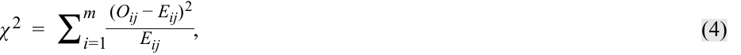
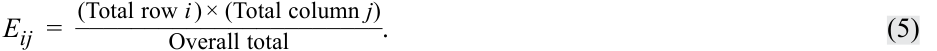
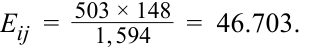
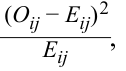
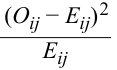
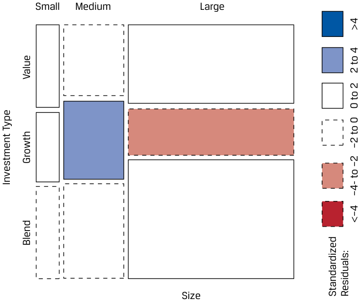
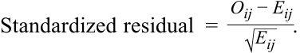
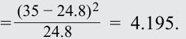
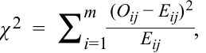
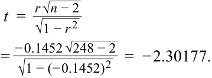

Learning Module 9 Parametric and Non-Parametric Tests of Independence - Part 2: Tests of Independence Using Contingency Table Data
Volume 1: Quantitative Methods
Learning Module 9 Parametric and Non-Parametric Tests of Independence
Part 2/2: Tests of Independence Using Contingency Table Data (PDF Pages 261–270)
Tập 1: Phương pháp Định lượng (Quantitative Methods)
Học phần 9: Các Kiểm định Tính Độc lập Tham số và Phi tham số (Parametric and Non-Parametric Tests of Independence)
Phần 2/2: Các Kiểm định Tính Độc lập Sử dụng Dữ liệu Bảng Tiếp liên (Tests of Independence Using Contingency Table Data) (Trang PDF 261–270)
| Mutual Fund |
Alpha | Expense Ratio |
Rank by Alpha |
Rank by Expense Ratio |
Difference in Rank |
Difference Squared |
|---|---|---|---|---|---|---|
| 1 | −0.52 | 1.34 | 6 | 6 | 0 | 0 |
| 2 | −0.13 | 0.40 | 1 | 9 | −8 | 64 |
| 3 | −0.50 | 1.90 | 5 | 1 | 4 | 16 |
| 4 | −1.01 | 1.50 | 9 | 2.5 | 6.5 | 42.25 |
| 5 | −0.26 | 1.35 | 3 | 5 | −2 | 4 |
| 6 | −0.89 | 0.50 | 8 | 8 | 0 | 0 |
| 7 | −0.42 | 1.00 | 4 | 7 | −3 | 9 |
| 8 | −0.23 | 1.50 | 2 | 2.5 | –0.5 | 0.25 |
| 9 | −0.60 | 1.45 | 7 | 4 | 3 | 9 144.5 |
(Tiếp theo Lời giải Câu 2 của Bộ Câu hỏi cuối Phần 1:)
rs_ = 1 −6(144.5) 9(80)= − 0.20417.
| Quỹ Tương hỗ (Mutual Fund) | Alpha | Tỷ lệ Chi phí (Expense Ratio) | Thứ hạng theo Alpha (Rank by Alpha) | Thứ hạng theo Tỷ lệ Chi phí (Rank by Expense Ratio) | Chênh lệch Thứ hạng (Difference in Rank) | Bình phương Chênh lệch (Difference Squared) |
|---|---|---|---|---|---|---|
| 1 | −0.52 | 1.34 | 6 | 6 | 0 | 0 |
| 2 | −0.13 | 0.40 | 1 | 9 | −8 | 64 |
| 3 | −0.50 | 1.90 | 5 | 1 | 4 | 16 |
| 4 | −1.01 | 1.50 | 9 | 2.5 | 6.5 | 42.25 |
| 5 | −0.26 | 1.35 | 3 | 5 | −2 | 4 |
| 6 | −0.89 | 0.50 | 8 | 8 | 0 | 0 |
| 7 | −0.42 | 1.00 | 4 | 7 | −3 | 9 |
| 8 | −0.23 | 1.50 | 2 | 2.5 | −0.5 | 0.25 |
| 9 | −0.60 | 1.45 | 7 | 4 | 3 | 9 |
| Tổng (Sum) | 144.5 |
- Determine whether to reject the null hypothesis at the 0.05 level of significance if the critical values are ±2.306.
- Xác định xem có bác bỏ giả thuyết không ở mức ý nghĩa $0.05$ hay không nếu các giá trị tới hạn là $\pm 2.306$.
The calculated test statistic, using the t -distributed test statistic
Lời giải (Solution):
t = _r√ _n − 2 _____7 _ √ 1 − _r2 ist= √− 0.20417 1 − 0.041681√= − 0.540183 0.978937= − 0.55181 .
Thống kê kiểm định tính toán được, sử dụng thống kê kiểm định có phân phối $t$:
On the basis of this value falling within the range of +2.306, we fail to reject the null hypothesis that the Spearman rank correlation coefficient is zero.
Dựa trên việc giá trị này nằm trong phạm vi $\pm 2.306$, chúng ta không bác bỏ giả thuyết không rằng hệ số tương quan hạng Spearman bằng $0$.
TESTS OF INDEPENDENCE USING CONTINGENCY TABLE DATA
CÁC KIỂM ĐỊNH TÍNH ĐỘC LẬP SỬ DỤNG DỮ LIỆU BẢNG TIẾP LIÊN (TESTS OF INDEPENDENCE USING CONTINGENCY TABLE DATA)
3
3
explain tests of independence based on contingency table data
Giải thích các kiểm định tính độc lập dựa trên dữ liệu bảng tiếp liên
When faced with categorical or discrete data, we cannot use the methods that we have discussed up to this point to test whether the classifications of such data are independent. Suppose we observe the following frequency table of 1,594 exchange-traded funds (ETFs) based on two classifications: size (i.e., market capitalization) and investment type (value, growth, or blend), as shown in Exhibit 7. The classification of the investment type is discrete, so we cannot use correlation to assess the relationship between size and investment type.
Khi đối mặt với dữ liệu phân loại (categorical data) hoặc dữ liệu rời rạc (discrete data), chúng ta không thể sử dụng các phương pháp đã thảo luận cho đến thời điểm này để kiểm định xem các phân loại của dữ liệu đó có độc lập với nhau hay không. Giả sử chúng ta quan sát bảng tần số (frequency table) sau đây của 1,594 quỹ hoán đổi danh mục (exchange-traded funds – ETFs) dựa trên hai phân loại: quy mô (tức giá trị vốn hóa thị trường) và loại hình đầu tư (giá trị, tăng trưởng hoặc hỗn hợp – value, growth, or blend), như được hiển thị trong Minh họa 7. Phân loại loại hình đầu tư là rời rạc, vì vậy chúng ta không thể sử dụng hệ số tương quan để đánh giá mối quan hệ giữa quy mô và loại hình đầu tư.
Exhibit 7: Size and Investment Type Classifications of 1,594 ETFs
Minh họa 7: Phân loại Quy mô và Loại hình Đầu tư của 1,594 Quỹ ETF (Exhibit 7: Size and Investment Type Classifications of 1,594 ETFs)
| Size Bas | ed on Market Capita | lization | ||
|---|---|---|---|---|
| Investment Type | Small | Medium | Large | Total |
| Value | 50 | 110 | 343 | 503 |
| Growth | 42 | 122 | 202 | 366 |
| Blend | 56 | 149 | 520 | 725 |
| Total | 148 | 381 | 1,065 | 1,594 |
| Loại hình Đầu tư (Investment Type) | Quy mô theo Vốn hóa Thị trường: Nhỏ (Small) | Quy mô theo Vốn hóa Thị trường: Vừa (Medium) | Quy mô theo Vốn hóa Thị trường: Lớn (Large) | Tổng (Total) |
|---|---|---|---|---|
| Giá trị (Value) | 50 | 110 | 343 | 503 |
| Tăng trưởng (Growth) | 42 | 122 | 202 | 366 |
| Hỗn hợp (Blend) | 56 | 149 | 520 | 725 |
| Tổng (Total) | 148 | 381 | 1,065 | 1,594 |
Exhibit 7 is called a contingency table or a two-way table (because there are two classifications, or classes—size and investment type).
Minh họa 7 được gọi là bảng tiếp liên (contingency table) hoặc bảng hai chiều (two-way table) (bởi vì có hai phân loại, hoặc hai lớp—quy mô và loại hình đầu tư).
If we want to test whether a relationship exists between the size and investment type, we can perform a test of independence using a nonparametric test statistic that is chi-square distributed:
Nếu chúng ta muốn kiểm định xem liệu có tồn tại mối quan hệ giữa quy mô và loại hình đầu tư hay không, chúng ta có thể thực hiện một kiểm định tính độc lập bằng cách sử dụng một thống kê kiểm định phi tham số có phân phối Khi-bình phương (chi-square distributed):

where:
trong đó:
-
m = the number of cells in the table, which is the number of groups in the first class multiplied by the number of groups in the second class;
-
Oij = the number of observations in each cell of row i and column j (i.e., observed frequency); and
-
Eij = the expected number of observations in each cell of row i and column j , assuming independence (i.e., expected frequency).
- $m =$ số lượng ô (cells) trong bảng, bằng số nhóm trong phân loại thứ nhất nhân với số nhóm trong phân loại thứ hai;
- $O_{ij} =$ số lượng quan sát trong mỗi ô ở hàng $i$ và cột $j$ (tức là tần số quan sát được – observed frequency); và
- $E_{ij} =$ số lượng quan sát kỳ vọng trong mỗi ô ở hàng $i$ và cột $j$, giả định tính độc lập (tức là tần số kỳ vọng – expected frequency).
This test statistic has ( r − 1)( c − 1) degrees of freedom, where r is the number of rows and c is the number of columns.
Thống kê kiểm định này có $(r - 1)(c - 1)$ bậc tự do, trong đó $r$ là số hàng và $c$ là số cột.
In Exhibit 7, size class has three groups (small, medium, and large) and investment type class has three groups (value, growth, and blend), so m is 9 (= 3 × 3). The number of ETFs in each cell ( Oij ), the observed frequency, is given, so to calculate the chi-square test statistic, we need to estimate Eij , the expected frequency, which is the number of ETFs we would expect to be in each cell if size and investment type are completely independent. The expected number of ETFs ( Eij ) is calculated using the following:
Trong Minh họa 7, lớp quy mô có ba nhóm (nhỏ, vừa và lớn) và lớp loại hình đầu tư có ba nhóm (giá trị, tăng trưởng và hỗn hợp), vì vậy $m$ bằng $9$ ($= 3 \times 3$). Số lượng quỹ ETF trong mỗi ô ($O_{ij}$), tức tần số quan sát được, đã được cho trước, vì vậy để tính thống kê kiểm định Khi-bình phương, chúng ta cần ước tính $E_{ij}$, tần số kỳ vọng, tức là số lượng quỹ ETF mà chúng ta kỳ vọng sẽ có trong mỗi ô nếu quy mô và loại hình đầu tư hoàn toàn độc lập với nhau. Số lượng quỹ ETF kỳ vọng ($E_{ij}$) được tính bằng công thức sau:

Consider one combination of size and investment type, small-cap value:
Hãy xem xét một sự kết hợp giữa quy mô và loại hình đầu tư, nhóm giá trị vốn hóa nhỏ (small-cap value):

We repeat this calculation for each combination of size and investment type (i.e., m = 9 pairs) to arrive at the expected frequencies, shown in Panel A of Exhibit 8. Next, we calculate
Chúng ta lặp lại phép tính này cho từng sự kết hợp giữa quy mô và loại hình đầu tư (tức là $m = 9$ cặp) để thu được các tần số kỳ vọng, được trình bày trong Bảng A của Minh họa 8. Tiếp theo, chúng ta tính:

the squared difference between observed and expected frequencies scaled by expected frequency, for each cell as shown in Panel B of Exhibit 8. Finally, by summing the values of
tức bình phương chênh lệch giữa tần số quan sát được và tần số kỳ vọng được chuẩn hóa theo tần số kỳ vọng, cho mỗi ô như được hiển thị trong Bảng B của Minh họa 8. Cuối cùng, bằng cách cộng tổng các giá trị của:

for each of the m cells, we calculate the chi-square statistic as 32.08025.
cho mỗi ô trong số $m$ ô, chúng ta tính được thống kê Khi-bình phương là $32.08025$.
Exhibit 8: Inputs to Chi-Square Test Statistic Calculation for 1,594 ETFs Assuming Independence of Size and Investment Type
Minh họa 8: Các Đầu vào cho Phép tính Thống kê Kiểm định Khi-bình phương cho 1,594 Quỹ ETF Giả định Tính Độc lập giữa Quy mô và Loại hình Đầu tư (Exhibit 8: Inputs to Chi-Square Test Statistic Calculation for 1,594 ETFs Assuming Independence of Size and Investment Type)
A. Expected Frequency of ETFs by Size and Investment Type
A. Tần số Kỳ vọng của các Quỹ ETF theo Quy mô và Loại hình Đầu tư (Expected Frequency of ETFs by Size and Investment Type)
| Size B | ased on Market Capita | lization | |
|---|---|---|---|
| Investment Type | Small | Medium | Large |
| Value | 46.703 | 120.228 | 336.070 |
| Growth | 33.982 | 87.482 | 244.536 |
| Blend | 67.315 | 173.290 | 484.395 |
| Total | 148.000 | 381.000 | 1,065.000 |
| Loại hình Đầu tư (Investment Type) | Quy mô theo Vốn hóa: Nhỏ (Small) | Quy mô theo Vốn hóa: Vừa (Medium) | Quy mô theo Vốn hóa: Lớn (Large) |
|---|---|---|---|
| Giá trị (Value) | 46.703 | 120.228 | 336.070 |
| Tăng trưởng (Growth) | 33.982 | 87.482 | 244.536 |
| Hỗn hợp (Blend) | 67.315 | 173.290 | 484.395 |
| Tổng (Total) | 148.000 | 381.000 | 1,065.000 |
B. Scaled Squared Deviation for Each Combination of Size and Investment Type
B. Độ lệch Bình phương Chuẩn hóa cho Mỗi Sự kết hợp giữa Quy mô và Loại hình Đầu tư (Scaled Squared Deviation for Each Combination of Size and Investment Type)
| Size B | ased on Market Capita | lization | |
|---|---|---|---|
| Investment Type | Small | Medium | Large |
| Value | 0.233 | 0.870 | 0.143 |
| Growth | 1.892 | 13.620 | 7.399 |
| Blend | 1.902 | 3.405 | 2.617 |
| Loại hình Đầu tư (Investment Type) | Quy mô theo Vốn hóa: Nhỏ (Small) | Quy mô theo Vốn hóa: Vừa (Medium) | Quy mô theo Vốn hóa: Lớn (Large) |
|---|---|---|---|
| Giá trị (Value) | 0.233 | 0.870 | 0.143 |
| Tăng trưởng (Growth) | 1.892 | 13.620 | 7.399 |
| Hỗn hợp (Blend) | 1.902 | 3.405 | 2.617 |
In our ETF example, we test the null hypothesis of independence between the two classes (i.e., no relationship between size and investment type) versus the alternative hypothesis of dependence (i.e., a relationship between size and investment type) using a 5 percent level of significance, as shown in Exhibit 9. If the observed values are equal to the expected values, the calculated test statistic would be zero. If, however, the observed and expected values are different, these differences are squared, so the calculated chi-square statistic will be positive. Therefore, for the test of independence using a contingency table, there is only one rejection region, on the right side.
Trong ví dụ về quỹ ETF của chúng ta, chúng ta kiểm định giả thuyết không về tính độc lập giữa hai lớp (tức là không có mối quan hệ giữa quy mô và loại hình đầu tư) đối lập với giả thuyết đối về sự phụ thuộc (tức là có mối quan hệ giữa quy mô và loại hình đầu tư) bằng cách sử dụng mức ý nghĩa $5\%$, như được hiển thị trong Minh họa 9. Nếu các giá trị quan sát được bằng với các giá trị kỳ vọng, thống kê kiểm định tính toán được sẽ bằng $0$. Tuy nhiên, nếu các giá trị quan sát được và kỳ vọng khác nhau, những chênh lệch này được bình phương lên, vì vậy thống kê Khi-bình phương tính toán được sẽ mang giá trị dương. Do đó, đối với kiểm định tính độc lập sử dụng bảng tiếp liên, chỉ có duy nhất một miền bác bỏ nằm ở phía bên phải (right side).
Exhibit 9: Test of Independence of Size and Investment Type for 1,594 ETFs
Minh họa 9: Kiểm định Tính Độc lập của Quy mô và Loại hình Đầu tư cho 1,594 Quỹ ETF (Exhibit 9: Test of Independence of Size and Investment Type for 1,594 ETFs)
| Step 1 | State the hypotheses. | H_0: ETF size and investment type are not related, so these classifications are inde- pendent;_Ha: ETF size and investment type are related, so these classifications are not independent. |
|---|---|---|
| Step 2 | Identify the appropriate test statistic. |
χ 2=∑ i=1 m ( O ij−E ij ) 2 _E ij |
| Step 3 | Specify the level of significance. | 5% |
| Bước 1 (Step 1) | Phát biểu các giả thuyết. | $H_0$: Quy mô ETF và loại hình đầu tư không có liên hệ với nhau, vì vậy các phân loại này độc lập với nhau; $H_a$: Quy mô ETF và loại hình đầu tư có liên hệ với nhau, vì vậy các phân loại này không độc lập với nhau. |
|---|---|---|
| Bước 2 (Step 2) | Xác định thống kê kiểm định phù hợp. | $$\chi^2 = \sum_{i=1}^{m} \frac{(O_{ij} - E_{ij})^2}{E_{ij}}$$ |
| Bước 3 (Step 3) | Xác định mức ý nghĩa. | $5\%$ |
Step 4 State the decision rule.
With (3 − 1) × (3 − 1) = 4 degrees of freedom and a one-sided test with a 5% level of significance, the critical value is 9.4877.
| We reject the null hypothesis if the calculated χ2statistic is greater than 9.4877. |
||
|---|---|---|
| Excel ~~CHISQ.INV(0.95,4)~~ |
||
| R ~~qchisq(.95,4)~~ |
||
| Python ~~from scipy.stats import~~ ~~chi2~~ |
||
| ~~chi2.ppf(.95,4)~~ | ||
| Step 5 | Calculate the test statistic. | χ2= 32.08025 |
| Step 6 | Make a decision. | Reject the null hypothesis of independence because the calculated_χ_2test statistic is greater than 9.4877. Evidence is sufficient to conclude that ETF size and investment type are related (i.e., not independent). |
| Bước 4 (Step 4) | Phát biểu quy tắc quyết định. | Với $(3 - 1) \times (3 - 1) = 4$ bậc tự do và kiểm định một phía với mức ý nghĩa $5\%$, giá trị tới hạn là $9.4877$. Chúng ta bác bỏ giả thuyết không nếu thống kê $\chi^2$ tính toán được lớn hơn $9.4877$. Excel: CHISQ.INV(0.95,4)R: qchisq(.95,4)Python: from scipy.stats import chi2 / chi2.ppf(.95,4) |
|---|---|---|
| Bước 5 (Step 5) | Tính toán thống kê kiểm định. | $$\chi^2 = 32.08025$$ |
| Bước 6 (Step 6) | Đưa ra quyết định. | Bác bỏ giả thuyết không về tính độc lập bởi vì thống kê kiểm định $\chi^2$ tính toán được lớn hơn $9.4877$. Có đủ bằng chứng để kết luận rằng quy mô ETF và loại hình đầu tư có liên hệ với nhau (tức là không độc lập). |
We can visualize the contingency table in a graphic referred to as a mosaic. In a mosaic, a grid reflects the comparison between the observed and expected frequencies. Consider Exhibit 10, which represents the ETF contingency table.
Chúng ta có thể trực quan hóa bảng tiếp liên trong một đồ họa được gọi là biểu đồ khảm (mosaic). Trong biểu đồ khảm, một lưới các ô phản ánh sự so sánh giữa tần số quan sát được và tần số kỳ vọng. Hãy xem xét Minh họa 10, biểu diễn bảng tiếp liên của quỹ ETF.
Exhibit 10: Mosaic of the ETF Contingency Table
Minh họa 10: Biểu đồ Khảm của Bảng Tiếp liên ETF (Exhibit 10: Mosaic of the ETF Contingency Table)

Chú thích hình ảnh: Biểu đồ khảm (Mosaic plot) chia theo Quy mô (Size: Small, Medium, Large) và Loại hình đầu tư (Investment Type: Value, Growth, Blend) cùng thang màu của Phần dư chuẩn hóa (Standardized Residuals từ $<-4$ đến $>4$).
The width of the rectangles in Exhibit 10 reflect the proportion of ETFs that are small, medium, and large, whereas the height reflects the proportion that are value, growth, and blend. The darker shading indicates whether the number of observations is more than expected under the null hypothesis of independence, whereas the lighter shading indicates that the number of observations is less than expected, with “more than” and “less than” determined by reference to the standardized residual boxes. The standardized residual, also referred to as a Pearson residual, is as follows:
Chiều rộng của các hình chữ nhật trong Minh họa 10 phản ánh tỷ trọng của các quỹ ETF có quy mô nhỏ, vừa và lớn, trong khi chiều cao phản ánh tỷ trọng thuộc nhóm giá trị, tăng trưởng và hỗn hợp. Độ tô bóng đậm hơn cho biết số lượng quan sát nhiều hơn mức kỳ vọng dưới giả thuyết không về tính độc lập, trong khi độ tô bóng nhạt hơn cho biết số lượng quan sát ít hơn mức kỳ vọng, với mức “nhiều hơn” và “ít hơn” được xác định bằng cách tham chiếu đến các ô phần dư chuẩn hóa (standardized residuals). Phần dư chuẩn hóa, còn được gọi là phần dư Pearson (Pearson residual), được tính như sau:

The interpretation for this ETF example is that there are more medium-size growth ETFs (standardized residual of 3.69) and fewer large-size growth ETFs (standardized residual of −2.72) than would be expected if size and investment type were independent.
Cách diễn giải cho ví dụ ETF này là có nhiều quỹ ETF tăng trưởng quy mô vừa hơn (phần dư chuẩn hóa là $3.69$) và ít quỹ ETF tăng trưởng quy mô lớn hơn (phần dư chuẩn hóa là $-2.72$) so với mức được kỳ vọng nếu quy mô và loại hình đầu tư độc lập với nhau.
EXAMPLE 4
VÍ DỤ 4 (EXAMPLE 4)
Using Contingency Tables to Test for Independence
Sử dụng Bảng Tiếp liên để Kiểm định Tính Độc lập (Using Contingency Tables to Test for Independence)
Consider the contingency table in Exhibit 11, which classifies 500 randomly selected companies on the basis of two environmental, social, and governance (ESG) rating dimensions: environmental rating and governance rating.
Hãy xem xét bảng tiếp liên trong Minh họa 11, phân loại 500 công ty được chọn ngẫu nhiên trên cơ sở hai chiều kích xếp hạng môi trường, xã hội và quản trị (ESG): xếp hạng môi trường (environmental rating) và xếp hạng quản trị (governance rating).
Exhibit 11: Classification of 500 Randomly Selected Companies Based on Environmental and Governance Ratings
Minh họa 11: Phân loại 500 Công ty Được Chọn Ngẫu nhiên Dựa trên Xếp hạng Môi trường và Quản trị (Exhibit 11: Classification of 500 Randomly Selected Companies Based on Environmental and Governance Ratings)
| Govern | ance Rating | |||
|---|---|---|---|---|
| Environmental Rating | Progressive | Average | Poor | Total |
| Progressive | 35 | 40 | 5 | 80 |
| Average | 80 | 130 | 50 | 260 |
| Poor | 40 | 60 | 60 | 160 |
| Total | 155 | 230 | 115 | 500 |
| Xếp hạng Môi trường (Environmental Rating) | Xếp hạng Quản trị: Tiến bộ (Progressive) | Xếp hạng Quản trị: Trung bình (Average) | Xếp hạng Quản trị: Kém (Poor) | Tổng (Total) |
|---|---|---|---|---|
| Tiến bộ (Progressive) | 35 | 40 | 5 | 80 |
| Trung bình (Average) | 80 | 130 | 50 | 260 |
| Kém (Poor) | 40 | 60 | 60 | 160 |
| Tổng (Total) | 155 | 230 | 115 | 500 |
- What are the expected frequencies for these two ESG rating dimensions if these categories are independent?
- Các tần số kỳ vọng cho hai chiều kích xếp hạng ESG này là bao nhiêu nếu các danh mục này độc lập với nhau?
Solution:
Lời giải (Solution):
The expected frequencies based on independence of the governance rating and the environmental rating are shown in Panel A of Exhibit 12. For example, using Equation 5, the expected frequency for the combination of progressive governance and progressive environmental ratings is
Các tần số kỳ vọng dựa trên tính độc lập của xếp hạng quản trị và xếp hạng môi trường được hiển thị trong Bảng A của Minh họa 12. Ví dụ, sử dụng Phương trình 5, tần số kỳ vọng cho sự kết hợp giữa xếp hạng quản trị tiến bộ và xếp hạng môi trường tiến bộ là:
The scaled squared deviations for each combination of environmental and governance rating are shown in Panel B of Exhibit 12. For example, using Equation 4, the scaled squared deviation for the combination of progressive governance and progressive environmental ratings is as follows:
Các độ lệch bình phương chuẩn hóa (scaled squared deviations) cho mỗi sự kết hợp giữa xếp hạng môi trường và quản trị được hiển thị trong Bảng B của Minh họa 12. Ví dụ, sử dụng Phương trình 4, độ lệch bình phương chuẩn hóa cho sự kết hợp giữa xếp hạng quản trị tiến bộ và xếp hạng môi trường tiến bộ như sau:

Exhibit 12: Inputs to Chi-Square Test Statistic Calculation Assuming Independence of Environmental and Governance Ratings
Minh họa 12: Các Đầu vào cho Phép tính Thống kê Kiểm định Khi-bình phương Giả định Tính Độc lập của Xếp hạng Môi trường và Quản trị (Exhibit 12: Inputs to Chi-Square Test Statistic Calculation Assuming Independence of Environmental and Governance Ratings)
A. Expected Frequencies of Environmental and Governance Ratings Assuming Independence
A. Tần số Kỳ vọng của Xếp hạng Môi trường và Quản trị Giả định Tính Độc lập (Expected Frequencies of Environmental and Governance Ratings Assuming Independence)
| G | overnance Rati | ng | |
|---|---|---|---|
| Environmental Rating | Progressive | Average | Poor |
| Progressive | 24.8 | 36.8 | 18.4 |
| Average | 80.6 | 119.6 | 59.8 |
| Poor | 49.6 | 73.6 | 36.8 |
| Xếp hạng Môi trường (Environmental Rating) | Xếp hạng Quản trị: Tiến bộ (Progressive) | Xếp hạng Quản trị: Trung bình (Average) | Xếp hạng Quản trị: Kém (Poor) |
|---|---|---|---|
| Tiến bộ (Progressive) | 24.8 | 36.8 | 18.4 |
| Trung bình (Average) | 80.6 | 119.6 | 59.8 |
| Kém (Poor) | 49.6 | 73.6 | 36.8 |
B. Scaled Squared Deviation for Each Combination of Environmental and Governance Ratings
B. Độ lệch Bình phương Chuẩn hóa cho Mỗi Sự kết hợp giữa Xếp hạng Môi trường và Quản trị (Scaled Squared Deviation for Each Combination of Environmental and Governance Ratings)
| G | overnance Rati | ng | |
|---|---|---|---|
| Environmental Rating | Progressive | Average | Poor |
| Progressive | 4.195 | 0.278 | 9.759 |
| Average | 0.004 | 0.904 | 1.606 |
| Poor | 1.858 | 2.513 | 14.626 |
| Xếp hạng Môi trường (Environmental Rating) | Xếp hạng Quản trị: Tiến bộ (Progressive) | Xếp hạng Quản trị: Trung bình (Average) | Xếp hạng Quản trị: Kém (Poor) |
|---|---|---|---|
| Tiến bộ (Progressive) | 4.195 | 0.278 | 9.759 |
| Trung bình (Average) | 0.004 | 0.904 | 1.606 |
| Kém (Poor) | 1.858 | 2.513 | 14.626 |
- Using a 5 percent level of significance, determine whether these two ESG rating dimensions are independent of one another.
- Sử dụng mức ý nghĩa $5\%$, hãy xác định xem hai chiều kích xếp hạng ESG này có độc lập với nhau hay không.
Solution:
Lời giải (Solution):
| Step 1 | State the hypotheses. |
H_0: Governance and environmental ratings are not related, so these ratings are independent; _Ha: Governance and environmental ratings are related, so these ratings are not independent. |
|---|---|---|
| Step 2 | Identify the appro- priate test statistic. |
χ 2=∑ i=1 m ( O ij−E ij ) 2 _E ij |
| Step 3 | Specify the level of significance. |
5% |
| Step 4 | State the decision rule. |
With (3 − 1) × (3 − 1) = 4 degrees of freedom and a one-sided test with a 5% level of significance, the critical value is 9.487729. We reject the null hypothesis if the calculated_χ_2 statistic is greater than 9.487729. Excel ~~CHISQ.INV(0.95,4)~~ R |
| ~~qchisq(.95,4)~~ Python |
||
| ~~from scipy.stats import chi2~~ ~~chi2.ppf(.95,4)~~ |
| Bước 1 (Step 1) | Phát biểu các giả thuyết. | $H_0$: Xếp hạng quản trị và môi trường không có liên hệ với nhau, vì vậy các xếp hạng này độc lập với nhau; $H_a$: Xếp hạng quản trị và môi trường có liên hệ với nhau, vì vậy các xếp hạng này không độc lập với nhau. |
|---|---|---|
| Bước 2 (Step 2) | Xác định thống kê kiểm định phù hợp. | $$\chi^2 = \sum_{i=1}^{m} \frac{(O_{ij} - E_{ij})^2}{E_{ij}}$$ |
| Bước 3 (Step 3) | Xác định mức ý nghĩa. | $5\%$ |
| Bước 4 (Step 4) | Phát biểu quy tắc quyết định. | Với $(3 - 1) \times (3 - 1) = 4$ bậc tự do và kiểm định một phía với mức ý nghĩa $5\%$, giá trị tới hạn là $9.487729$. Chúng ta bác bỏ giả thuyết không nếu thống kê $\chi^2$ tính toán được lớn hơn $9.487729$. Excel: CHISQ.INV(0.95,4)R: qchisq(.95,4)Python: from scipy.stats import chi2 / chi2.ppf(.95,4) |
| Step 5 | Calculate the test statistic. |
χ2= 35.74415 To calculate the test statistic, we first calcu- late the squared difference between observed and expected frequencies scaled by expected frequency for each cell, as shown in Panel B of Exhibit 12. Then, summing the values in each of the_m_cells (see Equation 4), we calculate the chi-square statistic as 35.74415. |
|---|---|---|
| Step 6 | Make a decision. | Reject the null hypothesis because the calculated χ2test statistic is greater than 9.487729. Evidence is sufficient to indicate that the environmental and governance ratings are related, so they are not independent. |
| Bước 5 (Step 5) | Tính toán thống kê kiểm định. | $\chi^2 = 35.74415$ Để tính thống kê kiểm định, trước tiên chúng ta tính bình phương chênh lệch giữa tần số quan sát được và tần số kỳ vọng được chuẩn hóa theo tần số kỳ vọng cho mỗi ô, như được hiển thị trong Bảng B của Minh họa 12. Sau đó, cộng tổng các giá trị trong mỗi ô của $m$ ô (xem Phương trình 4), chúng ta tính được thống kê Khi-bình phương là $35.74415$. |
|---|---|---|
| Bước 6 (Step 6) | Đưa ra quyết định. | Bác bỏ giả thuyết không bởi vì thống kê kiểm định $\chi^2$ tính toán được lớn hơn $9.487729$. Có đủ bằng chứng để chỉ ra rằng xếp hạng môi trường và quản trị có liên hệ với nhau, vì vậy chúng không độc lập với nhau. |
QUESTION SET
BỘ CÂU HỎI (QUESTION SET)
An analyst group follows 250 firms and classifies them in two dimensions. First, they use dividend payment history and earnings forecasts to classify firms into one of three groups, with 1 indicating the dividend stars and 3 the dividend laggards. Second, they classify firms on the basis of financial leverage, using debt ratios, debt features, and corporate governance to classify the firms into three groups, with 1 indicating the least risky firms based on financial leverage and 3 indicating the riskiest. The classification of the 250 firms is as follows:
Một nhóm phân tích theo dõi 250 công ty và phân loại chúng theo hai chiều kích. Thứ nhất, họ sử dụng lịch sử chi trả cổ tức và dự báo thu nhập để phân loại các công ty vào một trong ba nhóm, với nhóm 1 biểu thị các ngôi sao cổ tức (dividend stars) và nhóm 3 biểu thị các công ty tụt hậu về cổ tức (dividend laggards). Thứ hai, họ phân loại các công ty trên cơ sở đòn bẩy tài chính (financial leverage), sử dụng các tỷ số nợ, đặc điểm khoản nợ và quản trị doanh nghiệp để phân loại các công ty thành ba nhóm, với nhóm 1 biểu thị các công ty ít rủi ro nhất dựa trên đòn bẩy tài chính và nhóm 3 biểu thị các công ty rủi ro nhất. Phân loại của 250 công ty như sau:
| Financial Leverage | Dividend Group | |
|---|---|---|
| Group | 1 | 2 3 |
| 1 | 40 | 40 40 |
| 2 | 30 | 10 20 |
| 3 | 10 | 50 10 |
| Nhóm Đòn bẩy Tài chính (Financial Leverage Group) | Nhóm Cổ tức (Dividend Group): 1 | Nhóm Cổ tức (Dividend Group): 2 | Nhóm Cổ tức (Dividend Group): 3 |
|---|---|---|---|
| 1 | 40 | 40 | 40 |
| 2 | 30 | 10 | 20 |
| 3 | 10 | 50 | 10 |
Using the classification of the 250 firms, answer the following questions:
Sử dụng bảng phân loại của 250 công ty này, hãy trả lời các câu hỏi sau:
- Giả thuyết không và giả thuyết đối để kiểm định xem các nhóm cổ tức và nhóm đòn bẩy tài chính có độc lập với nhau hay không là gì?
- What are the null and alternative hypotheses to test whether the dividend and financial leverage groups are independent of one another?
- Solution:
Lời giải (Solution):
The hypotheses are as follows:
Các giả thuyết như sau:
H 0: Dividend and financial leverage ratings are not related, so these groupings are independent.
- $H_0$: Xếp hạng cổ tức và đòn bẩy tài chính không có liên hệ với nhau, vì vậy các cách phân nhóm này độc lập với nhau.
- $H_a$: Xếp hạng cổ tức và đòn bẩy tài chính có liên hệ với nhau, vì vậy các cách phân nhóm này không độc lập với nhau.
- Thống kê kiểm định phù hợp để sử dụng trong loại kiểm định này là gì?
- Ha: Dividend and financial leverage ratings are related, so these groupings are not independent.
- What is the appropriate test statistic to use in this type of test? Solution:
Lời giải (Solution):
The appropriate test statistic is
Thống kê kiểm định phù hợp là:

where Oij represents the observed frequency for the i and j group and Eij represents the expected frequency for the i and j group if the groupings are independent.
trong đó $O_{ij}$ đại diện cho tần số quan sát được đối với nhóm $i$ và $j$, còn $E_{ij}$ đại diện cho tần số kỳ vọng đối với nhóm $i$ và $j$ nếu các cách phân nhóm là độc lập với nhau.
The expected frequencies based on independence are as follows:
Các tần số kỳ vọng dựa trên tính độc lập như sau:
| Financial Leverage | Di | vidend Gro | up | |
|---|---|---|---|---|
| Group | 1 | 2 | 3 | Sum |
| 1 | 38.4 | 48 | 33.6 | 120 |
| 2 | 19.2 | 24 | 16.8 | 60 |
| 3 | 22.4 | 28 | 19.6 | 70 |
| Sum | 80 | 100 | 70 | 250 |
| Nhóm Đòn bẩy Tài chính (Financial Leverage Group) | Nhóm Cổ tức: 1 | Nhóm Cổ tức: 2 | Nhóm Cổ tức: 3 | Tổng (Sum) |
|---|---|---|---|---|
| 1 | 38.4 | 48 | 33.6 | 120 |
| 2 | 19.2 | 24 | 16.8 | 60 |
| 3 | 22.4 | 28 | 19.6 | 70 |
| Tổng (Sum) | 80 | 100 | 70 | 250 |
The scaled squared deviations for each combination of financial leverage and dividend grouping are:
Các độ lệch bình phương chuẩn hóa cho mỗi sự kết hợp giữa nhóm đòn bẩy tài chính và nhóm cổ tức là:
| Financial Lever- | Dividend Group | ||
|---|---|---|---|
| age Group | 1 | 2 | 3 |
| 1 | 0.06667 | 1.33333 | 1.21905 |
| 2 | 6.07500 | 8.16667 | 0.60952 |
| 3 | 6.86429 | 17.28571 | 4.70204 |
| Nhóm Đòn bẩy Tài chính (Financial Leverage Group) | Nhóm Cổ tức: 1 | Nhóm Cổ tức: 2 | Nhóm Cổ tức: 3 |
|---|---|---|---|
| 1 | 0.06667 | 1.33333 | 1.21905 |
| 2 | 6.07500 | 8.16667 | 0.60952 |
| 3 | 6.86429 | 17.28571 | 4.70204 |
- If the critical value for the 0.05 level of significance is 9.4877, what is your conclusion?
- Nếu giá trị tới hạn cho mức ý nghĩa $0.05$ là $9.4877$, kết luận của bạn là gì?
Solution:
Lời giải (Solution):
The sum of these scaled squared deviations is the calculated chi-square statistic of 46.3223. Because this calculated value exceeds the critical value of 9.4877, we reject the null hypothesis that these groupings are independent.
Tổng của các độ lệch bình phương chuẩn hóa này là thống kê Khi-bình phương tính toán được bằng $46.3223$. Bởi vì giá trị tính toán được này vượt quá giá trị tới hạn là $9.4877$, chúng ta bác bỏ giả thuyết không rằng các cách phân nhóm này độc lập với nhau.
~~PRACTICE PROBLEMS~~
BÀI TẬP THỰC HÀNH (PRACTICE PROBLEMS)
1. Jill Batten is analyzing how the returns on the stock of Stellar Energy Corp. are related with the previous month’s percentage change in the US Consumer Price Index for Energy (CPIENG). Based on 248 observations, she has computed the sample correlation between the Stellar and CPIENG variables to be −0.1452. She also wants to determine whether the sample correlation is significantly different from zero. The critical value for the test statistic at the 0.05 level of significance is approximately 1.96. Batten should conclude that the statistical relationship between Stellar and CPIENG is:
1. Jill Batten đang phân tích xem tỷ suất sinh lợi trên cổ phiếu của Stellar Energy Corp. có liên hệ như thế nào với thay đổi phần trăm của tháng trước đó trong Chỉ số Giá Tiêu dùng Hoa Kỳ ngành Năng lượng (CPIENG). Dựa trên 248 quan sát, cô đã tính được tương quan mẫu giữa hai biến Stellar và CPIENG là $-0.1452$. Cô cũng muốn xác định xem liệu tương quan mẫu có khác $0$ một cách có ý nghĩa thống kê hay không. Giá trị tới hạn cho thống kê kiểm định ở mức ý nghĩa $0.05$ là xấp xỉ $1.96$. Batten nên kết luận rằng mối quan hệ thống kê giữa Stellar và CPIENG là:
-
A. significant, because the calculated test statistic is outside the bounds of the critical values for the test statistic.
-
B. significant, because the calculated test statistic has a lower absolute value than the critical value for the test statistic.
-
C. insignificant, because the calculated test statistic is outside the bounds of the critical values for the test statistic.
- A. có ý nghĩa thống kê, bởi vì thống kê kiểm định tính toán được nằm ngoài giới hạn của các giá trị tới hạn cho thống kê kiểm định.
- B. có ý nghĩa thống kê, bởi vì thống kê kiểm định tính toán được có giá trị tuyệt đối thấp hơn giá trị tới hạn cho thống kê kiểm định.
- C. không có ý nghĩa thống kê, bởi vì thống kê kiểm định tính toán được nằm ngoài giới hạn của các giá trị tới hạn cho thống kê kiểm định.
2. Which of the following statements is correct regarding the chi-square test of independence?
2. Phát biểu nào sau đây là đúng liên quan đến kiểm định Khi-bình phương về tính độc lập (chi-square test of independence)?
-
A. The test has a one-sided rejection region.
-
B. The null hypothesis is that the two groups are dependent.
-
C. If there are two categories, each with three levels or groups, there are six degrees of freedom.
- A. Kiểm định có miền bác bỏ một phía (one-sided rejection region).
- B. Giả thuyết không là hai nhóm phụ thuộc lẫn nhau.
- C. Nếu có hai danh mục, mỗi danh mục có ba mức độ hoặc nhóm, thì có sáu bậc tự do.
~~SOLUTIONS~~
LỜI GIẢI (SOLUTIONS)
- A is correct. The calculated test statistic is
- A đúng. Thống kê kiểm định tính toán được là:

Because the value of t = −2.30177 is outside the bounds of ±1.96, we reject the null hypothesis of no correlation and conclude that evidence is sufficient to indicate that the correlation is different from zero.
Bởi vì giá trị của $t = -2.30177$ nằm ngoài giới hạn của $\pm 1.96$, chúng ta bác bỏ giả thuyết không về việc không có tương quan và kết luận rằng có đủ bằng chứng để chỉ ra rằng tương quan là khác $0$.
- A is correct. The test statistic includes squared differences between the observed and expected values, so the test involves only one side, the right side. B is incorrect because the null hypothesis is that the groups are independent, and C is incorrect because with three levels of groups for the two categorical variables, there are four degrees of freedom.
- A đúng. Thống kê kiểm định bao gồm bình phương các chênh lệch giữa giá trị quan sát được và giá trị kỳ vọng, vì vậy kiểm định chỉ bao gồm một phía là phía bên phải (right side). B sai bởi vì giả thuyết không là các nhóm độc lập với nhau, và C sai bởi vì với ba mức độ nhóm cho hai biến phân loại, có $(3 - 1)(3 - 1) = 4$ bậc tự do.